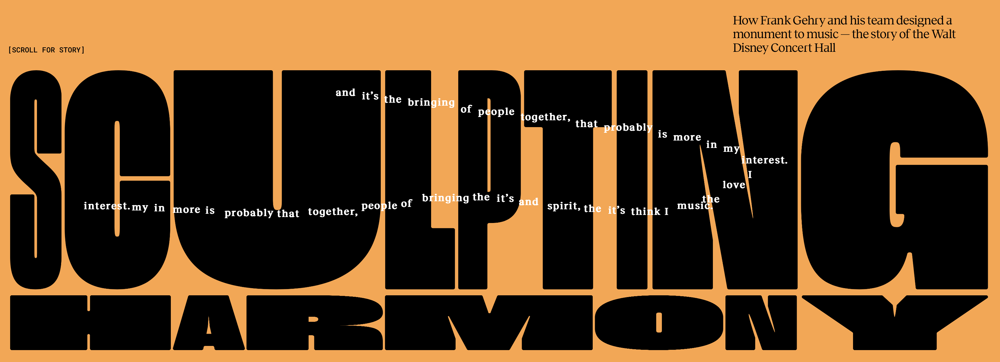
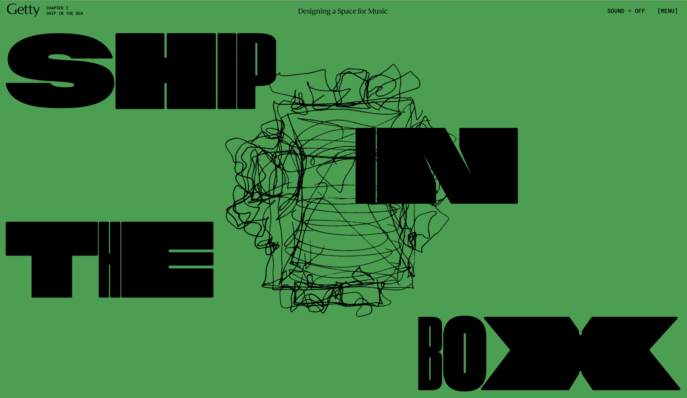
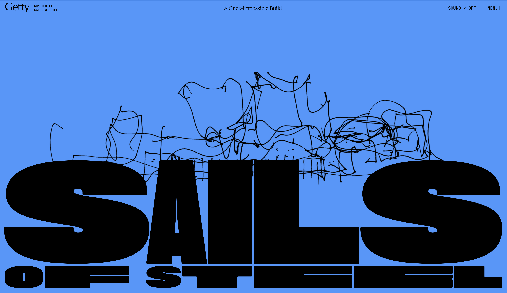
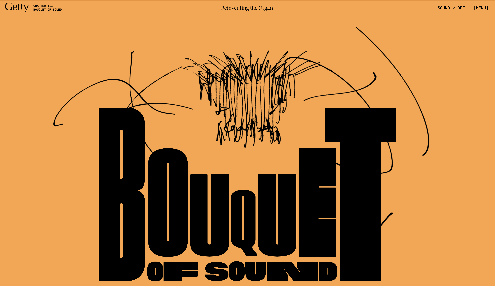
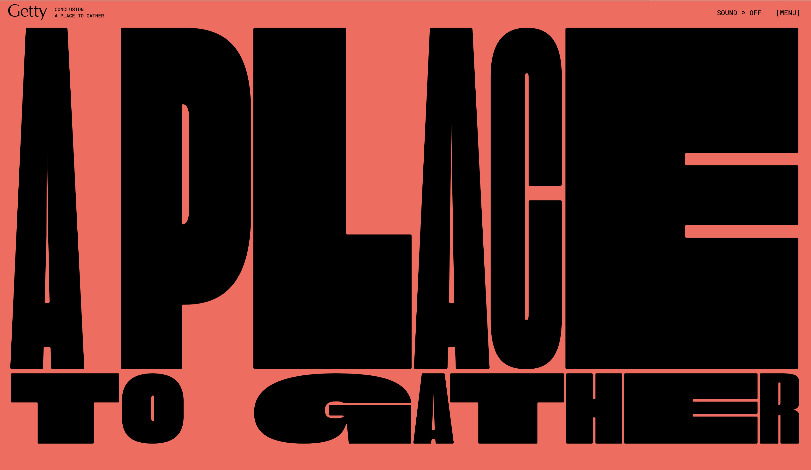
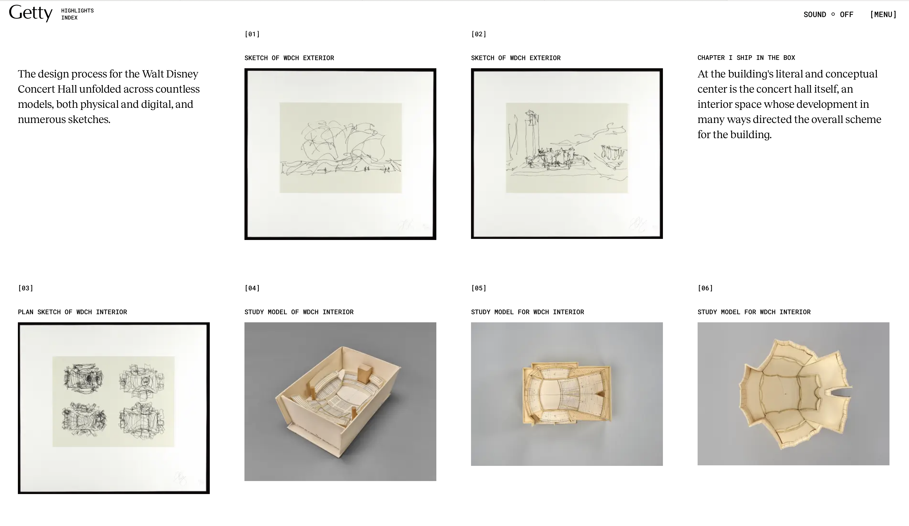
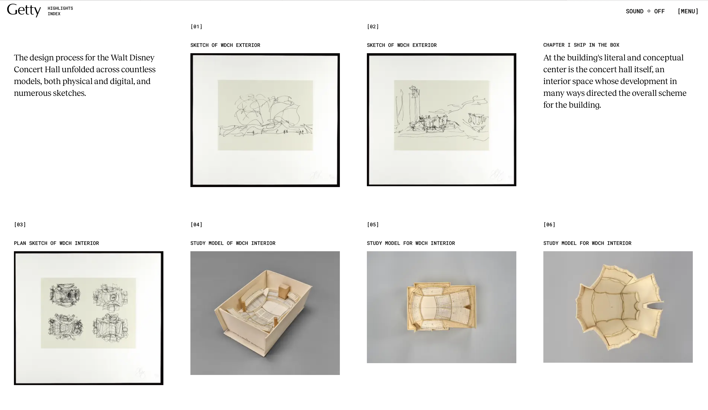

Research Responses
1. What was the first thing you paid attention to when interacting
with the experience?

The first thing that caught my attention was the bold, moving text
"Sculpting Harmony" against the orange background, accompanied by a
sketch-like drawing. This striking visual immediately drew me in and
set the tone for the site. When I hovered over the bold text, the
white text that followed my cursor with random quotes from Frank
Gehry was particularly engaging and hinted at the website's deeper
narrative.
"What I focused on when I designed the Disney Hall is the
relationship of the audience to the performer, and then the
performer to the performer, and the audience to the audience."
"I want to break down the scale so it's more friendly to the
community that's using it."
"I love the music. I think it's the
spirit, and it's bringing of people together, that probably is more
in my interest."
2. Spend two minutes with the experience and create a list of each
of your discrete actions.
During my first two minutes on the site, I observed the initial
visuals and interacted with the moving text. I hovered over the
text, scrolled down to reveal more content, viewed the aerial shot
of Walt Disney Concert Hall, and engaged with the animations that
accompanied the scrolling. I watched the embedded video, noted the
changing background colors and music, and explored the menu options,
including the accessible version of the site.
3. What part of the experience did you spend the most time engaging
with?
I spent the most time engaging with the scrolling animations and
transitions between different sections. These interactive elements,
combined with the changing background colors and music, were
visually captivating and encouraged me to explore the content
further. The seamless integration of visuals, text, and video
created an immersive experience that kept me engaged.
4. What was the most common action in your two-minute interaction
with the experience?




The most common action during my interaction was scrolling through
the webpage to explore the various sections and content. The site is
designed to reveal its content progressively as I scroll down, with
each section offering a different visual and informational
experience. Scrolling not only uncovered new content but also
triggered animations, text changes, and shifts in the site's
background and music, making it a central part of the interaction.
5. What is your impression of the intended primary goal of the
interactive experience?
The primary goal of the interactive experience appears to be to
educate and inspire visitors by telling the story of Frank Gehry's
design process for the Walt Disney Concert Hall. The site aims to
showcase the artistic and technical achievements involved in the
creation of the hall, emphasizing its innovation, beauty, and the
collaborative effort behind it. It's designed to evoke appreciation
for the architectural masterpiece and the creative journey behind
it.
6. How does the interactive experience communicate this primary
goal?
The experience communicates its primary goal through a combination
of compelling visuals, dynamic and interactive text, and
narrative-driven content. The use of quotes from Frank Gehry,
alongside interactive elements like videos and sketches, helps
convey the design philosophy and challenges faced during the
construction of the concert hall. These elements work together to
immerse users in the architectural process and give them a deeper
understanding of Gehry's creative vision and the hall's
significance.
7. What is your impression of how the experience should be
interacted with over time?
I believe that the experience is designed to be interacted with
multiple times, offering new insights with each visit. While it's
possible to explore the content in a single session, the depth and
richness of the information suggest that returning to the site would
provide a more comprehensive understanding. The interactive and
layered nature of the content encourages prolonged and repeated
engagement, allowing users to fully appreciate the details and
context.
8. How does the interactive experience communicate how it should be
interacted with over time?
The structure of the site, which is divided into chapters and
segments, naturally guides users to revisit different parts. The
changing music, variety of interactive elements, and extensive
content all indicate that the experience is meant to be explored
gradually. It encourages users to take their time, return to
previous sections, and dive deeper into the narrative on multiple
occasions.
9. What other media forms (digital or otherwise) does the experience
reference?

 

The experience references several media forms, including traditional
architectural sketches, digital 3D models, documentary-style videos,
and classical music. These references are not merely decorative but
play a crucial role in telling the story of the Walt Disney Concert
Hall. They help to convey the history, design process, and artistic
significance of the project, enriching the user's understanding of
the content.
10. What does this reference/s communicate to you about how you
should act when engaging with your research experience?
These references suggest that I should engage with the research
experience thoughtfully and attentively. The inclusion of sketches
and models invites a deeper appreciation of the artistic process,
while the videos encourage reflection on the ideas and philosophies
of Frank Gehry. The classical music and the immersive visual
elements signal that the experience is meant to be savored and
explored with a sense of curiosity and respect for the creative
process.
11. What does this reference/s communicate to you about how you
should feel when engaging with your research experience?
The references evoke a sense of awe and inspiration, making me feel
as though I am witnessing something truly special and innovative.
The classical music, in particular, enhances the emotional impact,
creating an atmosphere of reverence and appreciation for the
artistic and architectural achievements being showcased. The
experience is designed to elicit a deep emotional response,
encouraging users to feel connected to the creative journey and the
final architectural masterpiece.
12. What is the most frustrating part of the interaction to you and
what makes that part frustrating?
The most frustrating part of the interaction was the placement of
the subtitles during Frank Gehry's interview. The subtitles were
positioned at the very bottom left of the screen, which made it
difficult to fully appreciate the visual composition of the video.
This placement detracted from the overall viewing experience, as I
had to split my attention between the visuals and reading the text.
Additionally, the segmented playback controls of the video was
inconvenient, as it didn't allow for seamless navigation between
sections, which made rewinding or rewatching specific parts more
cumbersome.
13. What is the most satisfying part of the interaction to you and
what makes that part satisfying?
The most satisfying part of the interaction was the seamless
integration of visuals, text, and music that created an immersive
and engaging experience. The site's ability to convey the story of
the Walt Disney Concert Hall through dynamic and interactive
elements made the exploration enjoyable. The thoughtful design and
high-quality content, particularly in how content is revealed
through scrolling, added to the overall satisfaction.